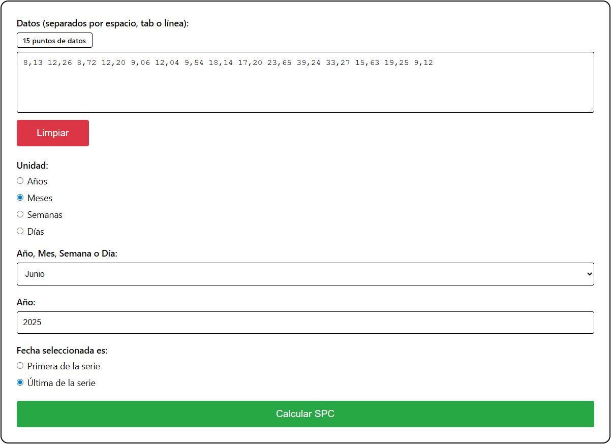
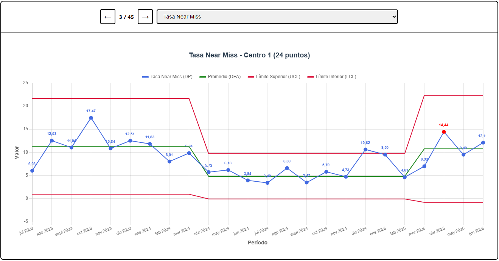

Calculadora
La Calculadora te permite ingresar cualquier serie de datos para generar un gráfico de comportamiento de proceso. Puedes copiar y pegar los números desde cualquier tipo de archivo, o desde una página web.

Panel de Control
El Panel de Control te permite cargar un archivo tipo Excel para generar un gráfico por cada columna de datos en el archivo. Las columnas deben incluir encabezados con los nombres de cada serie de datos. Debes añadir una columna con las fechas correspondientes a cada punto de datos de la planilla. Puedes incluir una columna con el encabezado "Centro", en donde se registre la organización o unidad que genera la información. Puedes descargar todos los gráficos en formato OPD (presentación) o PDF.
